Uzak Diyarlar'a hoşgeldiniz. Bu bölümde karakter yaratımı anlatılmaktadır. Anlatım, ekran görüntüleriyle birlikte götürülecektir.
Aşağıda oyuna ilk bağlandığınızda sizi karşılayan ekranı görmektesiniz. Buna "hoşgeldin ekranı" diyebiliriz. Ekranın alt kısmında "Karakter ismini girin:" kısmında sizden bir karakter ismi beklenmektedir. Örnek olarak yaratacağımız karakter için denemecüce ismini girip entera basıyoruz.
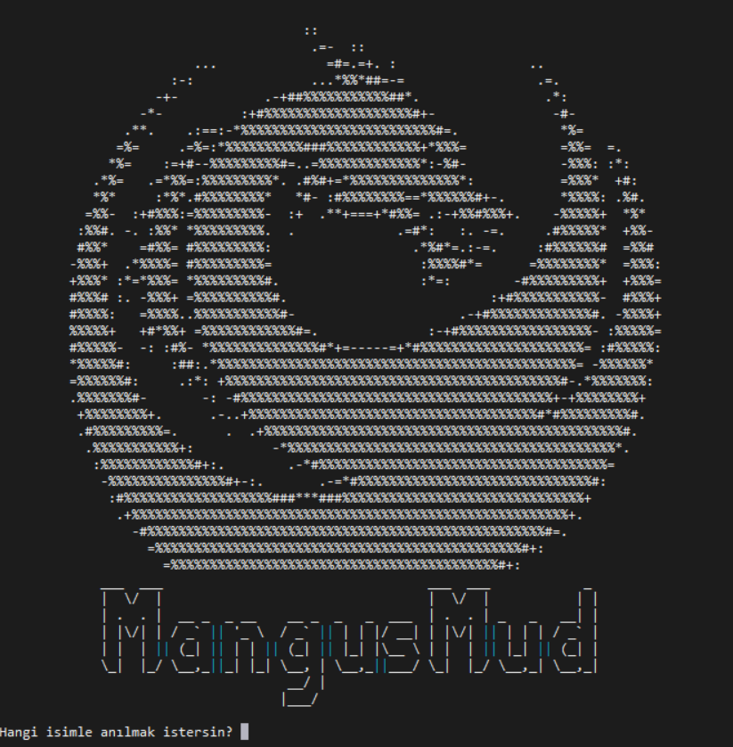
Bu bölümde yeni yaratacağımız deneme isimli karakterin isminin kurallara uygun olup olmadığı sorulmaktadır. Dikkat ederseniz 7 madde sıralanmıştır. Aslında denemecüce ismi oyun kurallarına uygun değildir. Karakterimizin isminin uygun olduğunu belirtmek için E yazıp entera basıyoruz.
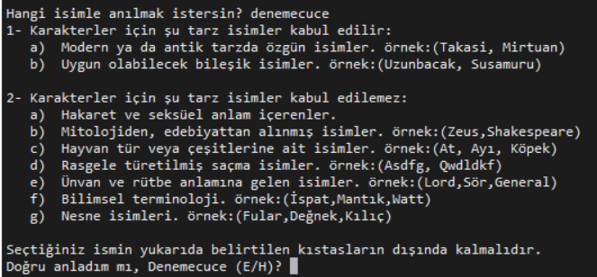
Bu bölümde yeni yarattığımız karakter için parola istenmektedir. Parolayı yazıp entera bastıktan sonra parolayı tekrar girmemizi isteyerek doğrulama gerçekleştirir.
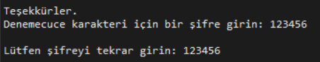
Aşağıda yaratılan karakter için ırk seçiminin yapılacağı ekran görülmektedir. Irkların isimlerinin yanında hangi niteliklerde iyi, hangilerinde kötü oldukları ve bu ırklara ait bireylerin seviye atlamak için fazladan kaç tecrübe puanı (exp) toplamak zorunda oldukları listelenmektedir. Deneme isimli karakterimiz için cüce ırkını seçiyoruz. Bunun için cüce yazıp entera basıyoruz.
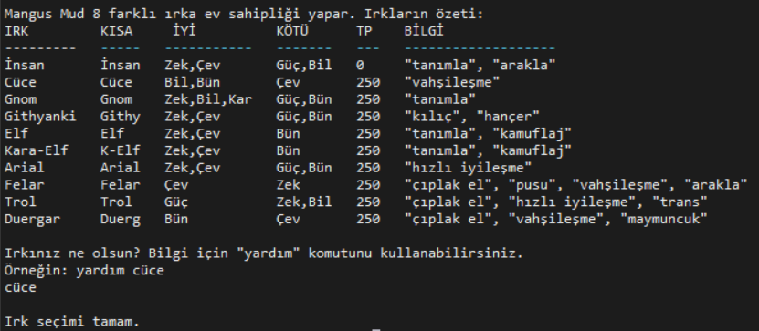
Denemecuce isimli karakter için bir cinsiyet belirlememiz gerekiyor.Karakterimiz erkek veya kadın olabilir. Seçim yapmak için e veya k yazıp entera basıyoruz.
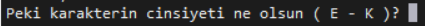
Şimdi karakterimiz için bir sınıf seçmemiz gerekiyor. Aşağıdaki ekranda önce bir açıklama yapılıyor ardından da Uzak Diyarlar'daki sınıflar listeleniyor. Sınıfların hangi niteliğe ihtiyaç duyduğunu ve seviye atlamak için fazladan kaç tecrübe puanı toplaması gerektiğini görüyoruz. Tüm bunların altında az önce seçtiğimiz ırk (cüce seçmiştik) hangi sınıfların uygun olduğu söylenmektedir. Kimi sınıflar belirli ırklara özeldir. Örneğin ancak bir insan vampir olabilir.Biz karakterimiz için savaşçı yazıp entera basıyoruz.
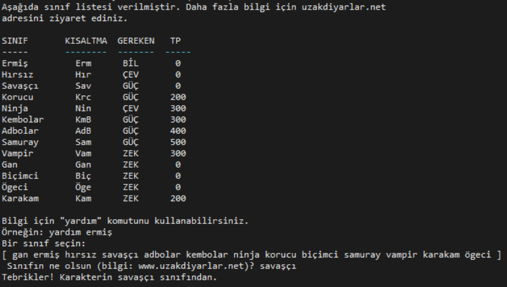
Her karakterin bir yönelimi vardır. Üç çeşit yönelim bulunur, iyi (good), yansız (neutral) ve kem (evil). Nasıl bir oyun oynamak istiyorsunuz? Kalbi temiz bir karakter mi olacaksınız, yoksa içinizdeki şeytana teslim olup "kem" mi olacaksınız? Belki de taraf tutmak istemiyorsunuzdur. Biz karakterimiz için yansız yazıp entera basıyoruz.
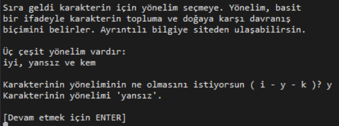
Karakterimizin kanunlara karşı davranış biçimini etik ekranında seçiyoruz. Üç çeşit etiğimiz var. Tüze, yansız, kaos. Şimdilik yansız seçerek devam edelim.
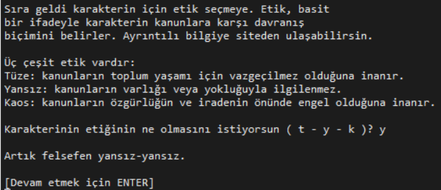
Karakterimizi yarattık. Aşağıda gördüğünüz ekran oyuna gerçek giriş yapmadan önceki son ekrandır.
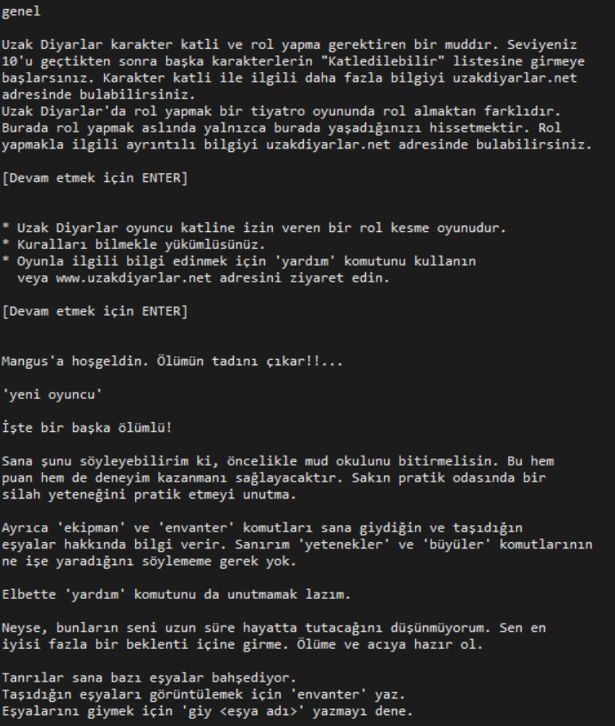
Artık oyunun içindeyiz. Aşağıda tüm yeni karakterlerin giriş yaptığı Mud Okulu Girişi'ni görüyoruz.
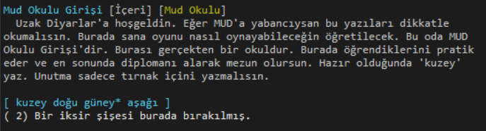
Tebrikler. Karakteri yarattık. Şimdi bir "skor" ekranını görüp bu yardım başlığını sonlandıralım. Bunun için skor yazıp entera basalım.
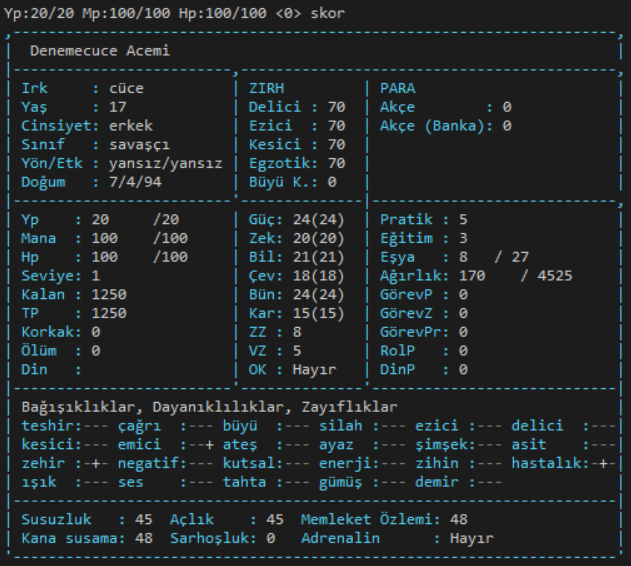